International Journal of Mechanical Engineering and Mechatronics (IJMEM)
ISSN: 1929-2724

Volume 1, Issue 2 Year 2012 - Pages 36-49
DOI: 10.11159/ijmem.2012.005
Application of CFD and Phenomenological Models in Studying Interaction of Two Turbulent Plane Jets
Ehsan Faghani, Steven N. Rogak
Department of Mechanical Engineering, University of British Columbia
6250 Applied Sciences Lane, Vancouver, BC V6T 1Z4
ehsan.faghani@alumni.ubc.ca; rogak@mail.ubc.ca
Abstract - This paper presents a numerical and analytical study of structure and flow development in planar (2-dimensional) turbulent jets. The numerical results are used to develop a phenomenological solution, here referred as Bending Model, for twin turbulent plane jets. The effects of nozzle-nozzle spacing and injection angle are emphasized in numerical study. This study includes a wide range of nozzle- nozzle spacing, 4.25, 9 and 18.25 and injection angle between -20 to 20. In the farfield, the k–ε model predicts the velocity of the jet higher than the experimental results; however, the overall performance of k–ε model is acceptable in the prediction of velocity field. Mean velocity and static pressure fields are presented. The Bending Model can predict the attachment of two plane jets for a wide range of nozzle-nozzle spacing and injection angle. Based on the model and modified Reichardt's hypothesis, the flow field in the domain is predicted. The results are compared with the numerical simulation of the k-є model and previous experimental results. The results show encouraging agreement with the numerical and experimental results.
Keywords: Turbulent Jet, Twin Plane Nozzle, Interaction, k–ε model, Bending Model.
© Copyright 2015 Authors This is an Open Access article published under the Creative Commons Attribution License terms. Unrestricted use, distribution, and reproduction in any medium are permitted, provided the original work is properly cited.
Nomenclature
- cp: Combined point
- d0: Nozzle diameter
- I: Turbulence intensity
- Ka: Axial velocity decay rate constant
- Kr: spread rate constant
- Lx: Domain length in x-direction
- Ly: Domain width in y-direction
- M: Total momentum
- M0: Total momentum at nozzle exit
- Mf: Momentum of combined jet at farfield
- M(x): Total momentum at location x
- mp: Merging point (also called confluence point)
- P: Static pressure
- S: Nozzle-nozzle spacing
- u: Velocity magnitude
- U0: Velocity magnitude at the nozzle exit
- uc: Velocity at symmetry line (y=0)
- um: Maximum velocity in each cross section
- us1, us2: Velocity profile single jets 1 and 2.
- x,y: Coordinate system
- xmp: Length of converging region
- xcp: Length of converging region plus merging region
- y0: Position of zero velocity in recirculation zone; representative of shear layer boundary between jets
- yc: Centerline distance from coordinate in y direction
Greek:
- α: Constant equal to 0.693
- θ: Angle relative to x-axis
- θ 0: Angle between two jets at the nozzle exit
- θ(x): Angle relative to x-axis in location x
- ρ: density
- subscript:
- 0: At nozzle exit
- 1: First jet here referred to upper jet
- 2: Second jet here referred to lower jet
1. Introduction
Turbulent twin jets have numerous industrial applications including in burners, boilers, gas turbine, combustion chambers and fuel injection systems. Performance of these processes can be improved through a better understanding of the twin jets and can consequently decrease the impact of exhaust pollutants. In the previous studies, multiple jet performance have been compared with single jets, and many advantages over single jets, such as better mixing and noise reduction,have been noticed (Raghunathan and Reid, 1981). In most of the industrial applications, multiple circular jets are used; however, considering plane twin jets is important from an academic point of view.
Three relevant regions of the flow field are identified in figure 1. The converging region begins at the nozzle exit and extends to the point where the inside shear layers of the jets merge at the merging point (mp) and xmp shows the length of the converging zone. Miller and Comings (1960) showed that the convergence of two jets is due to the sub-atmospheric region near the symmetry line. The merging point can be identified by the velocity on the symmetry plane being equal to zero. Beyond the merging point, two jets start integration and the velocity in the symmetry line increases to a maximum value. In this region the velocity profile is bimodal. The combined point is defined as that point along the symmetry plane at which the velocity is maximum. The merging region is defined between the merging point and the combined point. Finally, the combined region is downstream of the combined point where the two jets begin to resemble a self-similar single jet. The general characteristics of the flow field are illustrated in figure 1.
Measurements of the force-momentum fields in a dual-jet flow were reported by Miller and Comings (1960). Two regions of sub-atmospheric and super-atmospheric static pressures are reported in the flow field of plane jets. The negative pressure will cause converging curvature of the individual jets and non-conservation of x-momentum. Tanaka (1970, 1974) studied two parallel plane jets including the basic flow pattern and entrainment. Elbanna et al. (1983) compared parallel jets and a single jet at the region downstream from the combined point. In that region, the mean velocity decay matched that of a single jet, although the magnitude of the velocity was higher for the parallel jets. Also, the jet spreading reported as a linear function with an angle slightly lower than that of the single jet.
Lin and Sheu (1990, 1991) used hot-wire anemometry to measure mean velocity in both the merging and combined regions of plane jets. Measurements also indicated that the entrainment and the spreading rates in the combined region were greater than those in a single jet flow. Nasr and Lai (1997) compared parallel plane jets and offset jets. In offset jets, flow issues from a nozzle parallel to a wall. It is mentioned that the symmetry plane that exists between two parallel plane jets may appear to affect the flow field in much the same way as a solid wall does in a reattaching offset jet. Anderson and Spall (2001) evaluated the ability of the standard k-ε model and a Reynolds stress transport model (RSM) in prediction of parallel plane jets. The numerical and experimental results are compared over a range of nozzle-nozzle spacings, 9<S/d0<18.25. The results also compared with a single jet. As a result of their work, the k-ε model shows deviation from the experimental results, RSM model is suggested for simulation of twin jets.
In industrial applications twin jets may not be parallel. Researchers studied converging and diverging twin jets in burners (Boushaki and Sautet, 2010) and combustion engines (Nishida et al., 2009). The injection angle is adjusted to control flame stability, and to reduce pollutant emissions. In some applications (Nishida et al., 2009) the penetration rates of unsteady state jets are important. The penetration rate of turbulent jets is directly related to the momentum of the jet (Ouellette and Hill, 2000). Using paired nozzle instead of traditional single jets might change the momentum of the resulting jet and change penetration rate of the jet.
Twin plane jets present a special case of shear flow with sub-atmospheric zone, super-atmospheric zone, recirculation zone and flow curvature. This type of flow presents an interesting case for turbulence modeling and theoretical studies.
Schlichting (1968) presented the analytical solution of single plane and circular jets. Rajaratnam (1976) reviewed most of the analytical solutions for different kind of jets including plane jet, circular jet, wall jet, round jet and confined jet. In a free plane jet, the solution is based on conservation of momentum, and the pressure term is neglected. It is mathematically shown by Rajaratnam (1976) that for a confined jet, the momentum plus pressure is constant in x-direction and the pressure term cannot be neglected. However no analytical solution has been introduced for confined jets, yet.
Reichardt (1943) introduced the turbulent momentum transfer hypothesis for multiple free jets. Pani (1980-1983) extended the Reichardt's hypothesis for the case of single and multiple three-dimensional free jets. The main concept arriving at the solution is that the momentum profiles across a single jet can be superimposed to predict the velocity profiles for flow from multiple nozzles. Pani (1983) compared the theory with the experimental data for three dimensional jets and the theory could predict the distribution of velocity in the domain. In these cases the Reichardt's hypothesis is applied for the cases in which pressure term does not play a major role thus the centerlines of the jets remain at the injection line. Moreover the performance of Reichardt's hypothesis in the case of converging or diverging twin jets has not been reviewed yet.
In the present study the mean velocity and static pressure field is presented for turbulent twin jets from the numerical study.The current study considers nozzle-nozzle spacings of S/d0=4.25, 9 and 18.25. These nozzle-nozzle spacings are selected according to the experiments of plane jets in literature by Nasr and Lai (1997) and Anderson and Spall (2001). The numerical results are compared with these experimental results. Injection angle (figure 2b), which is defined as the angle between velocity vectors of two nozzles, are set to Ѳ0=-20, 0 and 20. The performance of the standard k–ε turbulence model is evaluated for all three zones (converging zone, merging zone and combined zone). Special attention is paid to the momentum changes in x-direction which is important in the prediction of the penetration rate of transient jets (Ouellette and Hill, 2000), and will help us establish a solution for twin plane jets.
In the current study we introduce theBending Model which can be used to predict the interaction of twin plane jets. Beside this solution, a numerical simulation (CFD) of twin plane jets is performed and presented, in order to support the bending model results.The Bending Model is based on three steps:
- 1. Pressure plus momentum constant: It is analytically shown that the pressure plus momentum is constant in x-direction for twin plane jets. Numerical results support this concept too.
- 2. Equation of jet centerline location: This equation is a simple ODE which has been obtained by writing y-momentum equation. The Bending Model is based on the concept that the negative pressure will cause curvature in the flow field of individual jets and non-conservation of x-momentum.
- 3. By using modified Reichardt's hypothesis and the results of centerline velocity location, yc, the velocity field in the domain is predicted. The results are compared with the numerical and experimental data.
The present solution can be used for converging and diverging twin plane jets too.The same concept might be used for flow near the wall or other objects.
2. Numerical Simulation
2. 1. Numerical Details
A non-uniform mesh of 150×190 is adopted for discretization of the flow domain. Structured grids are shown in figure 2a. These computations were performed using ANSYS FLUENT 12.1. The geometry under consideration, together with the coordinate system, is shown in Figure 2b. A turbulent free jet discharges from a vent of dimension (d0) issued to a stagnant background. Because of symmetry, only one half of the jet domain is modeled in this study. The value of Lx is 100 times greater than hydraulic diameter.Two other domain lengths are considered with Lx=200 and 400 in order to ensure that the jet flow is unaffected by the location of the pressure outlet boundary. The velocity field remains unchanged except for insignificant changes at downstream of the flow. The value of Ly, for an acceptable boundary condition, was selected 30 times longer than hydraulic diameter in y-direction. On the inlet region, uniform velocity profile with a turbulence intensity I=3.6% is used according to Anderson and Spall (2001). More on the effect of inlet turbulence intensity can be found in the paper by Faghani et al (2010).The value of the Reynolds number in the present numerical study is Re= 69,000 for all the cases. Mesh independence tests are performed using a mesh of 300×380. The maximum difference in the centerline velocity (along the x-axis) between the coarse and fine grids was 0.5%. The working fluid in all of the cases is air.
In addition to residual convergence of continuity, two more criteria have been selected: maximum velocity at the symmetry line and mass flow rate at the exhaust (x=Lx). Figure 3 shows the convergence history for the case of S/d0=9. Maximum velocity at the symmetry line and mass flow rate at the exhaust are representative of near-field and far-field convergence respectively. As you can see here, after sufficient number of iterations both near-field and far-field flow will converge to final solution.
2.2. Validation of CFD Simulation
In order to validate the numerical simulation, the current results are compared with the experiment of Anderson and Spall (2001) on plane jets with similar parameters. First order and second order upwind are employed in this part, as one can see from figure 4; using higher order in the discretization of convective term does not make a significant change in simulation of single jets. However switching from the first order upwind to the second order upwind changes the velocity in the symmetry line between two jets in the merging zone and the start of the combined zone. For the rest of the current paper, second order upwind is used.
In the previous experiments, it is shown that static pressure of single free jets is constant in entire domain, except for jet in confined space, close to wall or impinging jets. However, in twin plane jets there is a sub-atmospheric pressure zone, a super-atmospheric static pressure zone, a recirculation zone and flow curvature. Centerline velocity for different nozzle spacing and radial distribution of velocity is also compared with experimental results and it is shown later in the current paper.
2.3 Configuration of Flow in Domain
In figure 5 x-velocity, static pressure and streamlines are shown for the near field. Three different regions which have been explained earlier can easily be seen in figure 5a. x-velocity is normalized by U0 which is the velocity at the nozzle exit. Potential core which can be noticed as a region with a velocity equal or greater than nozzle exit is clear in figure 5a. Mean static pressure contours are shown in figure 5b. Static pressure is normalized by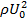. Streamlines combined with static pressure are shown in figure5c to make it possible to see the effect of pressure on the flow direction.
The recirculation zone can be noticed clearly in figure 5c, which is limited to the converging zone. In the converging zone, the sub-atmospheric static pressure region cause change in the flow direction and converging of two jets. It is consistent with the concept of Miller and Comings (1960) that the convergence of two jets is due to the sub-atmospheric region near the symmetry line. The vortex center and the merging point are located in the converging zone before the super-atmospheric zone.
2. 4. Effect of Jet Spacing
In this part, we will compare the results of different nozzle-nozzle spacings. A special case of twin jets is studied when S/d0=1 or in other words, twin jets are attached together and form a single jet. In this particular case, d0 is half of the hydraulic diameter. The authors believe that for performance comparison between twin and single jets, single jet should be considered as a special case of twin jet when S/d0=1; by this consideration, the mass flow rate and momentum of the jets would be the same at the nozzle exit. In all discussions of this part, injection angle is equal to zero.
In figure 6 velocities at the symmetry line for different nozzle spacings are shown. The current numerical results are compared with the experimental results. In the combined region, the numerical model predicts uc higher than the experimental results. The same difference has been noticed in previous studies e.g. Anderson and Spall (2001).In the converging zone the agreement between numerical and experimental results is acceptable. The deviation between the numerical and experimental results will increase by decreasing nozzle spacing value. On the other hand, it should be noticed that the experimental results of S/d0=4.25 (Nasr and Lai, 1997) do not follow the trend of the other nozzle-nozzle spacing. In general, it could be mentioned that the numerical results of k-ε model show good agreement with experimental results for the converging and merging zones, but slightly overpredict velocity in combined zone.
2. 5. Integral of Momentum Equation
The Momentum of the free jets is constant in streamwise direction (Rajaratnam, 1976) and (Schlichting, 1968). For confined jets where the changes in the pressure field are not negligible, integral of "pressure plus momentum" is constant in every cross section (Rajaratnam, 1976). We examined the above hypothesis for twin jets in the current study. Figure 7 shows the results of momentum and pressure integrals. In this figure Mf is momentum of each jet in farfield. The accuracy of this hypothesis compared with k-ε model simulation; the maximum error in calculation was 2%. As the nozzle spacing increases (from 4.25 to 18.25), the momentum in the combined zone will decrease (from 0.84 to 0.69 of total inlet momentum), which causes lower penetration rate in transient jets. From this figure, it is also can be found that if pressure is atmospheric in the domain (after combined point), momentum will be constant too.
3. Analytical Expressions
3.1. Equation of Motion
The continuity and momentum equation for twin jets are written in a similar fashion as for single plane jets. The complete set of equations for single plane jet can be found in Rajaratnam (1976). After simplifications, the important conclusion can be written as
|
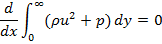 |
(1) |
which states that pressure plus momentum is preserved in the axial direction. In this equation, r and p are density and pressure respectively and x and y are the axial and lateral directions. The accuracy of equation (1) has been compared with the k-є model simulations for wide range of nozzle-nozzle spacing(S/d0) using CFD. The maximum error in calculation was 2%.
3. 2. Model Implementation for Jet Centerline Location
TheBending Model is introduced here to predict the curvature of twin jets and the position where they merge.This model is based on the idea that the low pressure region between the jets will cause curvature of flow and reduce the x-momentum. The schematic figure of the implementation the model for a control volume of the flow is shown in figure 8. In this figure M(x) is momentum of the jet at location x, q (x) is the angle between x axis and the jet at location x and p is pressure.
By considering the momentum equation in y-direction for the control volume of figure 8; finally, we will reach to the equation of jet centerline location. The derivation of equation (2) with details can be found in Appendix A.
|
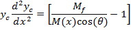 |
(2) |
In this equation yc is the centerline location of jet and M(x) is the total momentum of each jet as a function of x. It has been shown from the numerical simulation that the momentum will be constant in the farfield region of the jets (downstream of combined point), Mfshows the farfield momentum of each jet.
>4. Prediction of the Attachment of Two Jets by Bending Model
As it can be seen from equation (2); M(x) is needed in order to solve the equation. In order to simplify the solution and reduce dependency on numerical solution we use momentum of the jet at the nozzle instead of M(x). A simple finite difference code is written to solve equation (3).
|
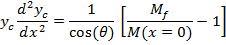 |
(3) |
By employing this modification, having the momentum profile from numerical simulation is not necessary; just the farfield momentum value is enough. The results of the modified equation in comparison with the numerical simulation are presented in figure 9. TheBending Model prediction for yc is following the trend of yc from the numerical simulation. In this figure y0 is the position of zero velocity between two jets in each cross section.The results of the model show good agreement with numerical simulation. Moreover the model shows the same trend in decreasing yc which supports the concept of Bending Model. This simple model helps us to find the merging point of two plane jets. It should be noted that the prediction of yc from k‐є model shows the combined point farther downstream than the experimental data. This deviation from experimental data will be discussed later in this paper. This solution is valid before the merging point where the shear layers of the jets meet at the symmetry line. Beyond the merging point the flow field can be found from the Reichardt's hypothesis and will be discussed later in this paper. By replacing M(x) with M(x=0), the results are still acceptable since in majority of the converging region (where this equation is applied) the momentum of the jet is close to inlet momentum. The merging point cross section is shown as a dashed line in figure 9.
5. Prediction of Flow Field by Modified Reichardt's Hypothesis
5.1 Reichardt's Hypothesis
Reichardt (1943) proposed the turbulent momentum transfer hypothesis for prediction of the flow field in multiple jets. While applying Reichardt's hypothesis, the square of the velocity, u2, is assumed to be self-similar. Pani (1980, 1983) superimposed the momentum of each jet to predict the velocity profiles for flow from multiple nozzles. For multiple three dimensional jets, it is shown that the total momentum in each cross section is the summation of each jet's momentum in that location.
|
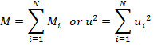 |
(4) |
>For the case of two parallel jets, the total velocity in the domain can be found as:
|
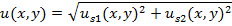 |
(5) |
In equation (5), u is total velocity in x-direction from two jets (S1 and S2) and us1 and us2 can be substituted by single jet profiles. A single jet profile, for which the center of nozzle is located at (0, 0), can be estimated by the equation (6).
|
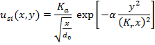 |
(6) |
Where Ka=2.67, Kr=0.1 and α=0.693 (Rajaratnam, 1976). If the nozzle s1 is located at y=S/2 and the nozzle s2 is located at y=-S/2 then the equation (6) can be written as equations (7) and (8).
|
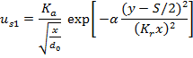 |
(7) |
|
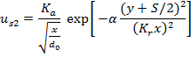 |
(8) |
And finally, the velocity of twin jets can be found by substituting equations (7) and (8) into equation (5).
5.2 Modified Reichardt's Hypothesis for Plane Jets
The concept of modifying the Reichardt's hypothesis is that the center of each jet will not remain at the injection line since the sub-atmospheric region causes the convergence of two jets. Thus the equations (7) and (8) can be modified to:
|
|
(9) |

|
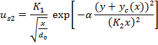 |
(10) |
In these equations, yc is the centerline location and be found from solution of equation (3). Also the equation (5) will be modified to equation (11) which shows the summation of two momentums is not equal to the final momentum due to the conservation of pressure plus momentum.
|
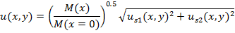 |
(11) |
Equation (11) is applicable as far as the sub-atmospheric pressure is effective. Beyond this region the super-atmospheric region changes the direction of the flow to a zero angle.It should be noted that the phenomenological solution which introduced here is not fully decoupled from the numerical simulation since we need M(x) as the input of the model. If instead of M(x) we use Mf , to lessen dependency to numerical simulation, then we underestimate the velocity by 25% in converging region and overestimate the velocity by 15% in merging zone the worst case (S/d0=18.25), however the velocity prediction would be the same in combined zone.
6. Results and Discussion
Figure 10 shows the velocity at the centerline for different nozzle-nozzle spacing. The Bending Model results compared with numerical simulation of the k-є model and the experimental results. The Bending Model shows good agreement with both the numerical and experimental results. The only zone that the Bending Model cannot predict is the circulation zone where the x-velocity is negative.The numerical simulation of k-є model predicts the velocity at the combined zone higher than the experimental data. The results of Bending Model can show the trend of the velocity correctly in both merging zone and combined zone.
The results of the Bending Model in the centerline and the ability of this model to predict the merging point and combined point are presented in figure 10 and 11. The lateral velocity distribution of the model should be compared with the numerical and experimental results too. Figure 12 presents the results of the Bending Model in different streamwise locations and compare it with the k-є model and the experimental results of Anderson and Spall (2001). In figure 12a, velocity from the Bending Model is predicted as a sharp step since at x/d0=5.26 it is still in the potential core region. The locations are selected in order to cover all three zones in twin jet domain. Generally the results of the Bending Model follow the velocity profile of the k-є model.
The results of the Bending Model in the centerline and the ability of this model to predict the merging point and combined point are presented in figure 10 and 11. The lateral velocity distribution of the model should be compared with the numerical and experimental results too. Figure 12 presents the results of the Bending Model in different streamwise locations and compare it with the k-є model and the experimental results of Anderson and Spall (2001). In figure 12a, velocity from the Bending Model is predicted as a sharp step since at x/d0=5.26 it is still in the potential core region. The locations are selected in order to cover all three zones in twin jet domain. Generally the results of the Bending Model follow the velocity profile of the k-є model.
The contour of x-velocity for the Bending Model and k-є model are compared in figure 13. There is a recirculation zone in the converging zone which the Bending Model cannot predict the negative velocities of this zone. However the general agreement between the numerical results and the Bending Model is acceptable.
It should be noted that analogous concept has been applied to circular jets successfully (Faghani and Rogak, 2012) where the numerical simulation is fully decoupled from the physical model. The model can predict 3D velocity distribution for wide range of parameters.
7. Conclusion
The mean velocity and static pressure field is presented for turbulent twin jets.Three zones can be identified in the flow field: the converging zone, the merging zone and the combined zone. Two static pressure zones can be mentioned in the domain near the symmetryline: a sub-atmospheric and a super-atmospheric region. The convergence of two jets is due to the sub-atmospheric region near the symmetric line. The super-atmospheric region causes change in the flow direction in the merging zone.
The numerical results of k-ε model are compared with the experimental results. In the combined region the numerical model predicts uchigher than the experimental results. In the converging zone, the agreement between the numerical and experimental results is acceptable.
It is also shown that for twin jets integral of "pressure plus momentum" is constant in every radial cross section. The accuracy of this hypothesis was compared with k-ε modeling simulation; the maximum error in the calculation was 2%. This conclusion is used to present a solution for twin plane jets.
In this study the Bending Model is introduced which can be used to predict the interaction of twin jets.
The Bending Model can predict the position of merging point and the combined point close to the numerical and experimental results. The model combined with Reichardt's hypothesis is capable to prediction velocity distribution. The only zone that the Bending Model cannot predict the velocity distribution is the circulation zone where the x-velocity is negative.
The model can predict the position of combined point appropriately; however, it is still higher than the presented correlation equation. It should be noticed that the Bending Model results are based on the momentum profile which has been obtained from k-є model, so it is reasonable that the model follow the results of k-є model rather than the experimental results. The phenomenological solution which introduced here is not fully decoupled from the numerical simulation since we need M(x) as the input of the model. However this paper shows how free jet theories can help us in development of a semi-analytical solution. Also by using the non-dimensional momentum (Appendix B) we essentially use this curve for all other future cases including converging and diverging nozzles, so no further CFD simulation is necessary for other cases. In future study we try to decouple the physical solution from the numerical simulation. In order to fully decouple the model from numerical simulation it is necessary to estimate the pressure magnitude between two jets in converging and merging zones. It can be done by balancing the entrainment of each jet by the pressure between two jets. A similar approach has been successfully applied to circular jets by Faghani and Rogak (2012) for all converging, diverging, parallel and non-equal jets.
Although the current study is limited to twin jets but in future this model can be extended to: non-equal jets, diverging/converging jets, jets near the wall or other objects.
Acknowledgements
The authors would like to thank Auto Partnership Canada (APC) and Westport Innovation Inc. for funding this project.
References
Anderson, E. A., Spall, R. E. (2001). Experimental and Numerical Investigation of Two-Dimensional Parallel Jets, Journal of Fluids Engineering, 123, 401-406. View Article
Boushaki, T., Sautet, J. (2010). Characteristics of flow from an oxy-fuel burner with separated jets: influence of jet injection angle, Experiments in Fluids, 48, 1095–1108. View Article
Elbanna, H., Gahin, S., Rashed, M. I. I. (1983). Investigation of two plane parallel jets. AIAA Journal, 21(7), 986–990. View Article
Faghani, E., Faghani, P., Eskandari, M. (2010) Numerical investigation of inlet condition effect on thermo-fluid characteristics of turbulent plane jet, IEEE: ITherm12th IEEE Intersociety Conference View Article
Faghani, E., Rogak, S. (2012) A Phenomenological Model of Two Circular Turbulent Jets, the international Journal of Engine Research. View Article
Lin, Y. F., Sheu, M. J. (1990). Investigation of two plane parallel unventilated jets. Experiments in Fluids, 10, 17–22. View Article
Lin, Y. F., Sheu, M. J. (1991). Interaction of Parallel Turbulent Plane Jets. AIAA Journal, 29, 1372–1373. View Article
Militzer J. (1977). Dual plane parallel jets. Ph.D. thesis, University of Waterloo.
Miller, D. R., Comings, E. W. (1960). Force-momentum fields in a dual-jet flow. Journal of Fluid Mechanics, 7, 237-256. View Article
Murai, K., Taga, M., Akagawa, K. (1976). An Experimental Study on Confluence of Two- Dimensional Jets. Bulletin JSME 19, 956-964. View Article
Nasr, A., Lai, J. C. S. (1997). Comparison of flow characteristics in the near field of two parallel plane jets and an offset plane jet. Physics of Fluids, 9(10), 2919–2931. View Article
Nishida, K., Tian, J., Sumoto, Y., Long, W., Sato, K., Yamakaw, M. (2009). An experimental and numerical study on sprays injected from two-hole nozzles for DISI engines, Fuel 88, 1634–1642. View Article
Ouellette, P., Hill, P. G. (2000). Turbulent Transient Gas Injections. Journal of Fluid Engineering, 122(4), 743-753. View Article
Pani, B. S., Dash, R. N. (1980). Application of Reichardt's Inductive Theory to Three-Dimensional Jets. Report No. HYD 2/80, Department of Civil Engineering, Indian Institute of Technology, Bombay, India.
Pani, B. S., Dash, R. N. (1983). Three-dimensional single and multiple free jets. Journal of Hydraulic Engineering, ASCE, 109(2), 254-269 View Article
Raghunathan, S., Reid, I. M. (1981). A study of multiple jet. AIAA Journal, 19, 124–127. View Article
Rajaratnam, N. (1976) Turbulent Jets, Elsevier Co., New York. View Article
Reichardt, H. (1943). On a new theory of free turbulence. Journal of the Royal Aeronautical Society, 47, 167-176.
Schlichting, H. (1968) Boundary Layer Theory. McGraw-Hill, New York, 6th edition, 747 pp. View Article
Tanaka, E. (1970). The interference of two-dimensional parallel jets -1st report, experiments on dual jet. Bulletin JSME, 13(56), 272–280. View Article
Tanaka, E. (1974). The interference of two-dimensional parallel jets -2nd report, experiments on the combined flow of dual jet. Bulletin JSME, 17(109),920–927. View Article
Appendix A
In y-direction the momentum equation can be written as:
|
|
(A1) |
We assume that the changes for Ѳ are small in a control volume of width ∆x. So the equation (A1) can be rewritten.
|
|
(A2) |
Applying Taylor series to approximate the function in equation (A2):
|
|
(A3) |
Final form of the equation for a control volume will be in the form of:
|
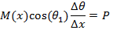 |
(A4) |
If then:
|
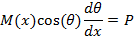 |
(A5) |
Using the concept of "pressure plus momentum conservation":
|
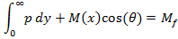 |
(A6) |
In this equation Mf is the total momentum of each jet after combined point. From figure 3 of the current paper the static pressure is nonzero just in the zone between two jets, so it is reasonable to calculate the average of pressure using yc which is the location of each jet centerline.
|
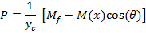 |
(A7) |
Substituting equation (A7) into equation (A5):
|
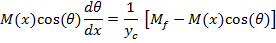 |
(A8) |
Replacing q with ycderivation:
|
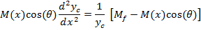 |
(A9) |
By simplifying the equation (A9), we will find the final equation for centerline of the jet.
|
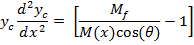 |
(A10) |
Appendix B
Figure B1 shows the results of CFD model which present the changes in the momentum in x-direction for different nozzle-nozzle spacing. Momentum will be constant for the streamwise locations which are not shown in this figure.
In order to have a wide-ranging solution, first we need to generalize the momentum equation for different S/d0. Since the only parameter which is different in the geometry of these cases is nozzle-nozzle spacing(S/d0), the momentum will be generalized applying nozzle-nozzle spacing. The results can be found in figure B2. Although the momentum equations seem not exactly uniform, this generalized form of momentum equation is accurate enough as the input of the Bending Model to predict the flow pattern with acceptable error for all S/d0 (not just for 4.25-18.25) in the current study.